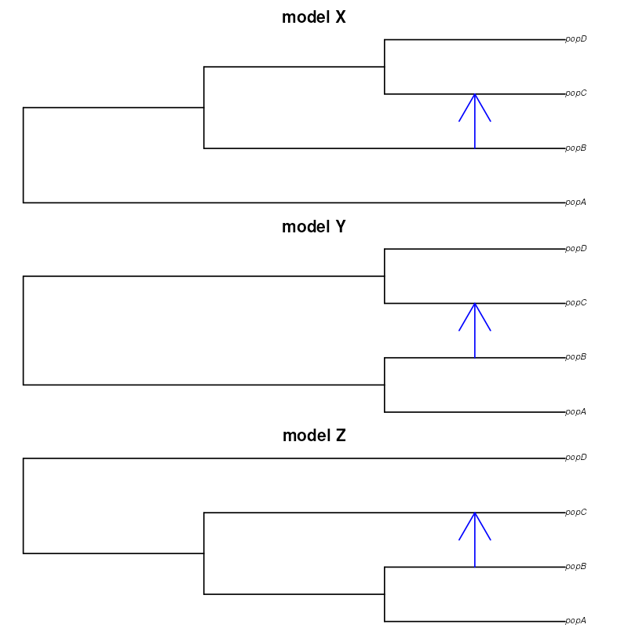
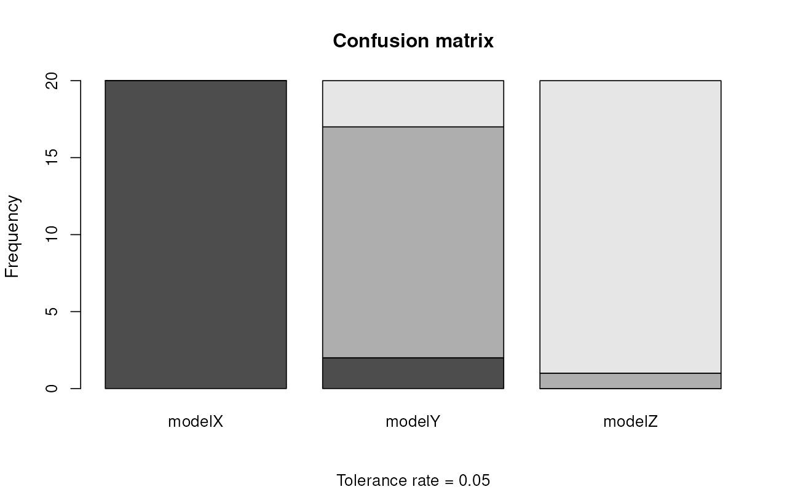

vignettes/vignette-06-downstream.Rmd
vignette-06-downstream.Rmd#> The legacy packages maptools, rgdal, and rgeos, underpinning the sp package,
#> which was just loaded, will retire in October 2023.
#> Please refer to R-spatial evolution reports for details, especially
#> https://r-spatial.org/r/2023/05/15/evolution4.html.
#> It may be desirable to make the sf package available;
#> package maintainers should consider adding sf to Suggests:.
#> The sp package is now running under evolution status 2
#> (status 2 uses the sf package in place of rgdal)
init_env()#> The interface to all required Python modules has been activated.
SEED <- 42
set.seed(SEED)⚠️⚠️⚠️
Note: The demografr R package is still under active development. As a result, its documentation is in a draft stage at best. Apologies for typos, inconsistencies, and other issues.
This vignette in particular is currently being used as a testing ground for implementing the support of various validation features of the abc R package. Please do not use any of this just yet.
⚠️⚠️⚠️
Let’s return to our first example. However, this time, imagine that we don’t really know whether which of the three following phylogenetic relationships is the one that captures the features of our data best, perhaps with different sources of evidence being consistent with one of them (as always, this is purely a toy example). In other words, we want to perform model selection.

For completeness, here is again our computed observed data:
observed_diversity <- read.table(system.file("examples/observed_diversity.tsv", package = "demografr"), header = TRUE)
observed_diversity#> set diversity
#> 1 popA 8.138167e-05
#> 2 popB 3.262781e-05
#> 3 popC 1.010541e-04
#> 4 popD 8.963820e-05
observed_divergence <- read.table(system.file("examples/observed_divergence.tsv", package = "demografr"), header = TRUE)
observed_divergence#> x y divergence
#> 1 popA popB 0.0002442102
#> 2 popA popC 0.0002443844
#> 3 popA popD 0.0002448539
#> 4 popB popC 0.0001099973
#> 5 popB popD 0.0001160577
#> 6 popC popD 0.0001099985
observed_f4 <- read.table(system.file("examples/observed_f4.tsv", package = "demografr"), header = TRUE)
observed_f4#> W X Y Z f4
#> 1 popA popB popC popD -2.796781e-06We will again bind them into a list:
observed <- list(diversity = observed_diversity, divergence = observed_divergence, f4 = observed_f4)First, in order to perform model selection, we need the models themselves. In this example, we have to options to do this.
First, we can define three separate functions, each of them encoding the three phylogenetic relationships:
modelX <- function(Ne_A, Ne_B, Ne_C, Ne_D, T_1, T_2, T_3, gf) {
popA <- population("popA", time = 1, N = Ne_A)
popB <- population("popB", time = T_1, N = Ne_B, parent = popA)
popC <- population("popC", time = T_2, N = Ne_C, parent = popB)
popD <- population("popD", time = T_3, N = Ne_D, parent = popC)
gf <- gene_flow(from = popB, to = popC, start = 9000, end = 9301, rate = gf)
model <- compile_model(
populations = list(popA, popB, popC, popD), gene_flow = gf,
generation_time = 1, simulation_length = 10000,
direction = "forward"
)
return(model)
}
modelY <- function(Ne_A, Ne_B, Ne_C, Ne_D, T_1, T_2, T_3, gf) {
popA <- population("popA", time = 1, N = Ne_A)
popB <- population("popB", time = T_1, N = Ne_B, parent = popA)
popC <- population("popC", time = T_2, N = Ne_C, parent = popA)
popD <- population("popD", time = T_3, N = Ne_D, parent = popC)
gf <- gene_flow(from = popB, to = popC, start = 9000, end = 9301, rate = gf)
model <- compile_model(
populations = list(popA, popB, popC, popD), gene_flow = gf,
generation_time = 1, simulation_length = 10000,
direction = "forward"
)
return(model)
}
modelZ <- function(Ne_A, Ne_B, Ne_C, Ne_D, T_1, T_2, T_3, gf) {
popA <- population("popA", time = 1, N = Ne_A)
popB <- population("popB", time = T_1, N = Ne_B, parent = popA)
popC <- population("popC", time = T_2, N = Ne_C, parent = popA)
popD <- population("popD", time = T_3, N = Ne_D, parent = popA)
gf <- gene_flow(from = popB, to = popC, start = 9000, end = 9301, rate = gf)
model <- compile_model(
populations = list(popA, popB, popC, popD), gene_flow = gf,
generation_time = 1, simulation_length = 10000,
direction = "forward"
)
return(model)
}
modelX(1, 1, 1, 1, 2000, 6000, 8000, 0.5) %>% plot_model(order = c("popA", "popB", "popC", "popD"), file = "modelX.pdf")
modelY(1, 1, 1, 1, 2000, 6000, 8000, 0.5) %>% plot_model(order = c("popA", "popB", "popC", "popD"), file = "modelY.pdf")
modelZ(1, 1, 1, 1, 2000, 6000, 8000, 0.5) %>% plot_model(order = c("popA", "popB", "popC", "popD"), file = "modelZ.pdf")Now, let’s specify priors using demografr’s templating syntax , as well as put together a list of tree-sequence summary functions and observed summary statistics:
priors <- list(
Ne... ~ runif(100, 10000),
T_1 ~ runif(1, 4000),
T_2 ~ runif(3000, 9000),
T_3 ~ runif(5000, 10000),
gf ~ runif(0, 1)
)
compute_diversity <- function(ts) {
samples <- extract_names(ts, split = "pop")
ts_diversity(ts, sample_sets = samples)
}
compute_divergence <- function(ts) {
samples <- extract_names(ts, split = "pop")
ts_divergence(ts, sample_sets = samples)
}
compute_f4 <- function(ts) {
samples <- extract_names(ts, split = "pop")
ts_f4(ts,
W = list(popA = samples$popA),
X = list(popB = samples$popB),
Y = list(popC = samples$popC),
Z = list(popD = samples$popD))
}
functions <- list(diversity = compute_diversity, divergence = compute_divergence, f4 = compute_f4)
observed <- list(diversity = observed_diversity, divergence = observed_divergence, f4 = observed_f4)
validate_abc(modelX, priors, functions, observed)
validate_abc(modelY, priors, functions, observed)
validate_abc(modelZ, priors, functions, observed)
tsX <- simulate_ts(modelX, priors)
tsY <- simulate_ts(modelY, priors)
tsZ <- simulate_ts(modelZ, priors)With that out of the way, we can proceed with generating simulated data for inference using all three models. What we’ll do is perform three runs and save them into appropriately named variables dataX, dataY, and dataZ:
library(future)
plan(multicore, workers = availableCores())
dataX <- simulate_abc(modelX, priors, functions, observed, iterations = 10000,
sequence_length = 10e6, recombination_rate = 1e-8, mutation_rate = 1e-8)
dataY <- simulate_abc(modelY, priors, functions, observed, iterations = 10000,
sequence_length = 10e6, recombination_rate = 1e-8, mutation_rate = 1e-8)
dataZ <- simulate_abc(modelZ, priors, functions, observed, iterations = 10000,
sequence_length = 10e6, recombination_rate = 1e-8, mutation_rate = 1e-8)The total runtime for the ABC simulations was 1 hours 19 minutes 50 seconds parallelized across 96 CPUs.
abcX <- perform_abc(dataX, engine = "abc", tol = 0.05, method = "neuralnet")#> Warning: All parameters are "none" transformed.
abcY <- perform_abc(dataY, engine = "abc", tol = 0.05, method = "neuralnet")#> Warning: All parameters are "none" transformed.
abcZ <- perform_abc(dataZ, engine = "abc", tol = 0.05, method = "neuralnet")#> Warning: All parameters are "none" transformed.Before doing model selection, it’s important to perform cross-validation to answer the question whether our ABC setup can even distinguish between the competing models.
This can be done using demografr’s convenience interface wrapper perform_cv() built around abc’s own function cv4postpr(). We will not go into too much detail, as this function simply calls cv4postpr() under the hood, passing to it all specified function arguments. For more details, read section “Model selection” in the vignette of the abc R package.
The one difference between the two functions is that perform_cv() removes the need to prepare character indices and bind together summary statistic matrices from different models—given that demografr’s ABC output objects track all this information along in their internals, this is redundant, and you can perform cross-validation of different ABC models simply by calling this:
cv_result <- perform_cv(
models = list(modelX = abcX, modelY = abcY, modelZ = abcZ), # must be a *named* list!
nval = 50, tol = 0.05, method = "neuralnet"
)If we print out the result, we get a quick summary with confusion matrices and other information:
cv_result#> Confusion matrix based on 20 samples for each model.
#>
#> $tol0.05
#> modelX modelY modelZ
#> modelX 20 0 0
#> modelY 2 15 3
#> modelZ 0 1 19
#>
#>
#> Mean model posterior probabilities (neuralnet)
#>
#> $tol0.05
#> modelX modelY modelZ
#> modelX 0.9840 0.0160 0.0000
#> modelY 0.0881 0.8051 0.1068
#> modelZ 0.0000 0.1296 0.8704Similarly, you can use the plot() function to visualize the result. This function, yet again, internally calls abc’s own plotting method internall, with a bonus option to save a figure to a PDF right from the plot() call (useful when working on a remote server):
plot(cv_result)
Because we have three models, each of the three barplots shows how often were summary statistics sampled from each model classified as likely coming from one of the three models. In other words, with absolutely perfect classification, each barplot would show just one of the three colors. If a barplot (results for one model) shows multiple colors, this means that some fraction of simulated statistics from that model was incorrectly classified as another model. Again, for more detail on interpretation, caveats, and best practices, please consult the abc R package vignette and a relevant statistical textbook.
The confusion matrices and the visualization all suggest that ABC can distinguish between the three models very well. For instance, modelX has been classified correctly in 20 out of the total of 20 cross-validation simulations, with an overall misclassification rate for all models of only 0.1.